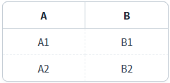

GridView의 'getHeaderValue' 메소드를 사용하여 헤더 값을 반환받는 예제입니다. 이 메소드는 헤더의 아이디를 인자로 받아 값을 반환합니다. 헤더의 인덱스로 헤더 값을 반환받을 때는 'getHeaderID' 메소드와 함께 사용하여 구현할 수 있습니다.
헤더의 ID로 헤더의 Value 반환받기
헤더의 Index로 헤더의 Value 반환받기
1
STEP 1: 초기 상태를 확인합니다.
GridView의 헤더 구성은 다음과 같습니다. 첫 번째 헤더 컬럼의 값은 'A', 아이디는 'h_col_a'이고 인덱스는 0입니다. 두 번째 헤더 컬럼의 값은 'B', 아이디는 'h_col_b'이고 인덱스는 1입니다.
Image 1.브라우저(Chrome) 실행 예시

2
STEP 2: 헤더의 ID가 'h_col_a'인 헤더의 Value 반환받기
'첫 번째 컬럼의 ID로 헤더 값 반환받기' 버튼을 클릭합니다.3
STEP 3: 실행된 결과를 확인합니다.
'로그 확인'에 출력된 로그를 확인합니다.(브라우저의 개발자 도구 콘솔에도 로그가 출력되며, 객체 형식으로 확인할 수 있습니다.)
Example 1.Log
[08:00:36] # 스크립트 실행
grd_exam1.getHeaderValue("h_col_a");
result) A1
STEP 1: 초기 상태를 확인합니다.
GridView의 헤더 구성은 다음과 같습니다. 첫 번째 헤더 컬럼의 값은 'A', 아이디는 'h_col_a'이고 인덱스는 0입니다. 두 번째 헤더 컬럼의 값은 'B', 아이디는 'h_col_b'이고 인덱스는 1입니다.
Image 2.브라우저(Chrome) 실행 예시
2
STEP 2: 헤더의 Index가 1인 헤더의 Value 반환받기
'두 번째 컬럼의 Index로 헤더 값 반환받기' 버튼을 클릭합니다.3
STEP 3: 실행된 결과를 확인합니다.
'로그 확인'에 출력된 로그를 확인합니다.(브라우저의 개발자 도구 콘솔에도 로그가 출력되며, 객체 형식으로 확인할 수 있습니다.)
Example 2.Log
[08:00:47] # 스크립트 실행 grd_exam1.getHeaderValue(grd_exam1.getHeaderID(1)); result) B
GridView의 'getHeaderValue' 메소드를 사용하여 스크립트를 작성합니다. 첫 번째 인자에는 헤더 컬럼의 ID를 할당해야 합니다. 세부 설정은 아래의 스크립트 예시에 작성되어 있습니다.
Example 3.Script
//예제 파일에서는 스크립트 'scwin.btn_exam1_1_onclick'에 작성되어 있습니다. // GridView 'grd_exam1'의 헤더 ID가 'h_col_a'인 헤더 컬럼의 Value를 반환받습니다. var result = grd_exam1.getHeaderValue("h_col_a"); // result) 'A'
GridView의 'getHeaderValue' 메소드와 'getHeaderID' 메소드를 사용하여 스크립트를 작성합니다. 세부 설정은 아래의 스크립트 예시에 작성되어 있습니다.
Example 4.Script
// GridView 'grd_exam1'의 헤더 Index가 1인 헤더 컬럼의 ID를 반환받습니다. var strHeaderID = grd_exam1.getHeaderID(1); // GridView 'grd_exam1'의 헤더 Index가 1인 헤더 컬럼의 Value를 반환받습니다. var result = grd_exam1.getHeaderValue(strHeaderID); // result) 'B'
getHeaderValue( headerId )
getHeaderID( headerIndex )